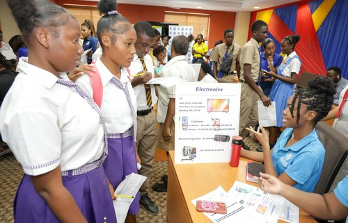
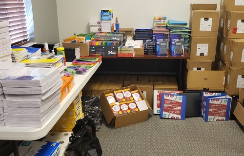
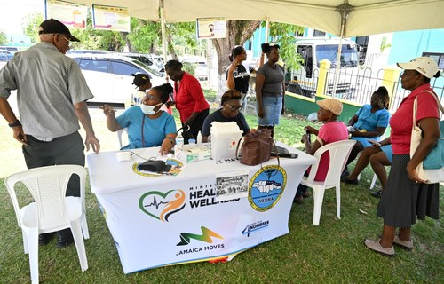
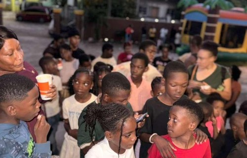

Community Cleanup and Tree Planting Day
Date: August 1, 2026
Location: Portmore Community Park, St. Catherine
Category: Environment
Volunteers will clean public areas, plant trees and share environmental awareness tips.
Building stronger Jamaican communities through service, education and outreach.
JCDA uses events to bring volunteers, families and community partners together.
Tip: Click the left side of the image to go to About Us, or click the right side to go to Projects/Gallery.
Showing all events.
Date: August 1, 2026
Location: Portmore Community Park, St. Catherine
Category: Environment
Volunteers will clean public areas, plant trees and share environmental awareness tips.

Date: August 8, 2026
Location: JCDA Learning Room, Kingston
Category: Youth
Young people will learn basic communication, teamwork and digital skills.

Date: August 15, 2026
Location: Mandeville Town Centre
Category: Education
JCDA will collect and distribute school supplies for students who need support.

Date: August 22, 2026
Location: Spanish Town Community Hall
Category: Outreach
Families can access wellness information, community services and volunteer support.

Date: August 29, 2026
Location: Montego Bay Civic Centre
Category: Outreach
Residents can register for future care packages, workshops and family support activities.